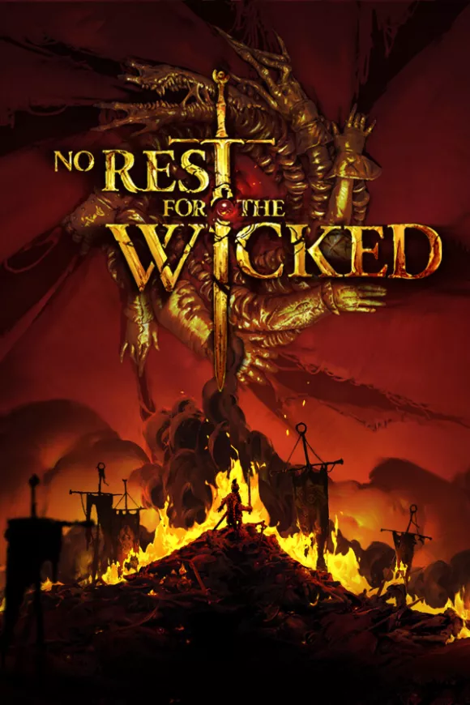

No Rest for the Wicked 34.4 GB
Género: Souls, Hack and Slash
Moon Studios, los desarrolladores galardonados por su trabajo en Ori and the
Blind Forest y Ori and the Will of the Wisps, nos traen No Rest for the Wicked,
un RPG visceral repleto de Acción certera que revolucionará el género.